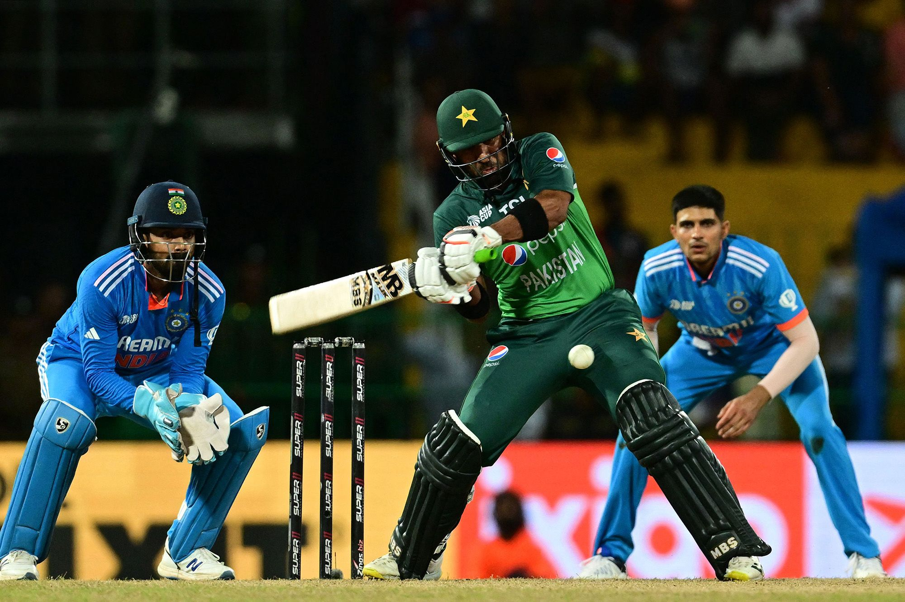

Cricket
Cricket Overview
Cricket is a popular outdoor sport played between two teams of 11 players each. It is played on an oval-shaped field with a central pitch. The game involves batting, bowling, and fielding, where one team bats to score runs while the other tries to dismiss them. A match consists of several formats, including Test matches, One-Day Internationals (ODIs), and Twenty20 (T20).
Key Elements of the Game
- Batting:
The team batting attempts to score runs by hitting the ball and running between wickets.
- Bowling:
The team bowling tries to dismiss the batsmen by hitting the stumps or getting them out through other methods.
- Fielding:
Fielders assist the bowler by catching the ball or preventing runs from being scored.
Popular Formats
- Test Matches:
Played over five days with two innings per team.
- One-Day Internationals (ODIs):
A limited overs format, each team faces 50 overs.
- Twenty20 (T20):
A fast-paced format with each team facing 20 overs.
Famous players
Shoaib Akhtar Known as the "Rawalpindi Express," Shoaib Akhtar was one of the fastest bowlers in cricket history. Younis Khan A prolific batsman and former captain, Younis Khan holds numerous records and was known for his consistency across all formats. Misbah-ul-Haq Former captain, known for his calm demeanor and leadership skills, Misbah was instrumental in Pakistan's rise in international cricket in the 2010s. Babar Azam A modern-day batting star, Babar Azam is considered one of the top batsmen in world cricket and the current captain of Pakistan. Saeed Anwar One of the finest openers in Pakistan's cricket history, Anwar was known for his stylish batting and high scores, including a memorable 194 against India.
Early History
Origins (16th-17th Century): Cricket is believed to have originated in 16th-century England, initially played by children and evolving into an adult game. It became particularly popular in southern England. The first known mention of cricket dates back to 1598.
Formalization (18th Century): By the 1700s, cricket became a well-organized sport with clubs and teams. The formation of the Marylebone Cricket Club (MCC) in 1787, based in London, played a key role in formalizing the game's rules.


Creation
Cricket Rules and Regulations
General Overview
Cricket is a team sport played between two teams of 11 players each. The game is played on an oval field with a rectangular pitch in the center. The objective is to score more runs than the opposing team while following the established rules of the game.
Basic Rules
- Batting:
One team bats while the other bowls and fields. The batting team tries to score as many runs as possible.
- Bowling:
The bowling team aims to dismiss the batsmen by hitting the stumps or catching them out.
- Overs:
An over consists of six legitimate deliveries from the bowler. In limited overs formats, there are a set number of overs per innings.
- Runs:
Runs are scored when the batsman hits the ball and runs between two wickets. A boundary (hitting the ball out of the playing field) scores 4 runs, while a six (hitting the ball over the boundary on the full) scores 6 runs.
- Wickets:
A batsman is out when they are bowled, caught, run out, stumped, or given out by the umpire for other reasons.
Types of Dismissals
- Bowled:
The ball hits the stumps and dislodges the bails.
- Caught:
The batsman hits the ball, and it is caught by a fielder before it hits the ground.
- Run Out:
A batsman is run out if the wicketkeeper or a fielder hits the stumps with the ball before the batsman reaches the crease.
- Stumped:
The wicketkeeper removes the bails while the batsman is out of their crease.
- Leg Before Wicket (LBW):
The ball hits the batsman's leg in line with the stumps and would have hit the stumps had the leg not been in the way.
Formats of Cricket
- Test Cricket:
Played over 5 days with each team having two innings. The match can end in a win, loss, or draw.
- One-Day Internationals (ODIs):
Limited to 50 overs per side, the team with the most runs at the end of their overs wins.
- Twenty20 (T20):
A fast-paced format with 20 overs per side, with each team trying to score as many runs as possible within those 20 overs.
Umpires and Decision Making
- Umpires:
Two on-field umpires oversee the match, ensuring players adhere to the rules and making decisions about dismissals, runs, and other plays.
- Third Umpire:
For certain situations (e.g., run-outs, close catches), a third umpire reviews video footage to make decisions.
- Decision Review System (DRS):
Teams can challenge an umpire's decision using technology like ball tracking and Hawk-Eye to make more accurate rulings.
Common Violations
- No-Ball:
When the bowler oversteps the crease or bowls an illegal delivery.
- Wide:
When the bowler delivers the ball too far from the batsman for them to play a shot.
- Overstepping:
The bowler must not step over the line when delivering the ball. Overstepping can result in a no-ball.
Equipment
Cricket requires specific equipment for safe and effective gameplay. Key items include a **bat**, used by batsmen to hit the ball, and a **ball**, made of leather with a hard core. **Protective gear** like pads, gloves, and helmets ensures player safety, especially against fast deliveries. Additionally, **stumps and bails** are used to form the wickets, essential for gameplay and dismissals.